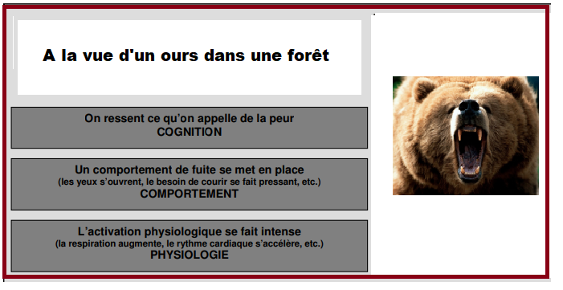
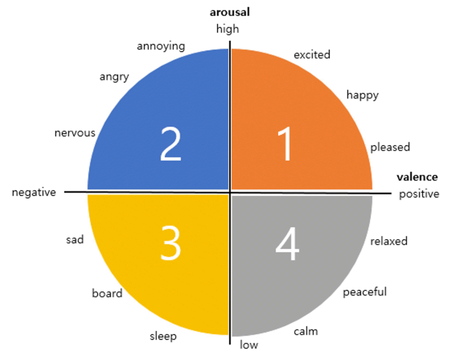
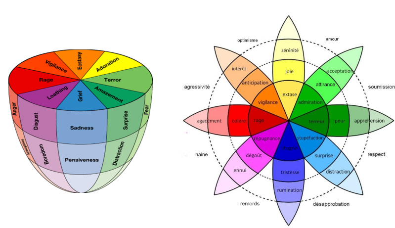

Modélisation, détection et annotation des états émotionnels
Etat de l'art
Définition du terme émotion
L'émotion est une notion floue et elle est dificilement définissable. De ce fait, il
existe plusieurs définitions du mot "émotion" . Mais le seul point sur lequel tous
les psychologues s'accordent, c'est que le concept est difficile à définir. En effet, la
complexité de la nature de l'émotion humaine ainsi que la diversité des formes avec
lesquelles elle s'exprime ont, longtemps, empêché l'accès à une définition univoque
du concept. Le mot "émotion" vient du latin "emovere, emotum" (enlever,
secouer) et de "movere" (se mouvoir) signifiant mouvement vers l'extérieur.
D'après l'étymologie, les émotions produisent donc des changements, psychiques ou
de comportement, qui provoquent des états subjectifs internes. Ces états internes
peuvent être positifs agréables comme la joie ou négatifs désagréables, comme
la colère. Dans ce sens Ekman et Davidson [Ekman 1994] définissent l'émotion
comme une réaction aiguë et transitoire, provoquée par un stimulus spécifque et
caractérisée par un ensemble cohérent de réponses cognitives, physiologiques et
comportementales [Petropoulou 2006].

Approche dimensionnelle
cette approche propose de représenter les émotions dans un espace
multi-dimensionnels. Par exemple, les dimensions peuvent être un axe de plaisir et
de déplaisir, d'éveil ou d'ennui, de nervosité, de puissance, de maîtrise de soi et bien
d'autres au besoin du modèle.

Russel [Russell 1980], en 1980 propose de représenter les émotions dans un espace bi-dimensionnel.
(arousal)
[Russell 80] [Posner 05]
La valence positives / négatives
L’activation : calme /
Approche catégorielle
Elle est Basée sur un ensemble limité d’émotions dites "basiques"
Malgré la diversité des propositions, six émotions semblent apparaître dans la
majorité de classifications proposées. Ces émotions sont les "Big Six" d'Ekman
[Ekman 1999] (colère, peur, tristesse, joie, dégoût et surprise).
Modèle de circumplex (Plutchik)
Le modèle de Plutchik est définit par le circumplex qui est un modèle multidimensionnel basé
sur des émotions primaires de base dont vont dériver des émotions secondaires.
Au fait, Selon Plutchik, il y a 8 émotions de base faites de 4 paires opposées : joie-tristesse,
acceptation-dégoût, peur-colère, surprise et anticipation. Les huit dimensions des émotions
fondamentales sont disposées comme un cône, avec au sommet les termes qui désignent
chaque émotion à son intensité maximale.
La figure suivante montre bien que l’axe vertical représente l’intensité et que la coupe horizontale
montre les émotions intenses : la rage, la vigilance, l’extase, l’adoration, la terreur,
l’étonnement, le chagrin et l’aversion. Si on regarde le cône de Plutchik on constate que plus
on s’oriente vers le bas et plus les différentes nuances des émotions sont difficiles à
distinguer. Ainsi, par exemple la distinction entre l’ennui et la contrariété est plus difficile que
son équivalent à l’étage supérieur : le dégout et la colère.

Contribution 1 : Modèle formel de représentation des émotions
nous proposons une nouvelle vision de la modélisation des états émotionnels.
Contraire aux approches traditionnelles visant une représentation symbolique (ontologique),
notre approche propose une représentation algébrique des états émotionnels. Il s’agit d’un
modèle multidimensionnel qui se base sur la représentation algébrique des émotions dans un
espace vectoriel. Chaque état émotionnel correspond à un vecteur dans un espace à 8
dimensions dont chacune représente une émotion de base. Ainsi chaque émotion est décrite
par un vecteur formé de huit composantes exprimé dans une base à huit axes où chaque axe
représente une émotion de base. Cela nous permet à la fois de représenter une infinité
d’émotions car notre modèle est un modèle continue et d’autre part de proposer des outils
mathématiques très performants pour l’analyse et le traitement de ces émotions.
Le modèle que nous proposons est similaire au modèle de représentation des couleurs qui se
base sur trois couleurs de bases (Rouge, Vert, Bleu) pour exprimer toutes les couleurs du
spectre visible. Donc notre modèle, par analogie, va se baser sur un ensemble d’émotions
basiques qui vont être utilisées pour exprimer toutes les émotions possibles. Pour l’élaboration
de notre modèle nous sommes basés sur le modèle de Plutchik qui a abordé ce problème
d’analogie avec les couleurs en proposant un dictionnaire d’émotion similaire au dictionnaire
de couleur. Plusieurs éléments paraissent importants dans le modèle multidimensionnel de
Plutchik parmi les quelles on peut d’une part citer la prise en compte d’un différentiel
d’intensité entre des états émotionnels relativement similaire (Terreur (intensité forte), Peur
(intensité moyenne), Appréhension (intensité faible), ou encore Extase, Joie, Sérénité), ce qui
rend ce modèle continue et extensible, et d’autre part la prise en considération de l’aspect de
similitude entre les émotions (la honte est plus proche de la culpabilité que de la joie) . Aussi,
dans son modèle, plutchik a défini les émotions mixtes ou composées par la combinaison
d’émotions primaires.
Donc après avoir étudié le modèle de Plutchik nous proposons de reprendre les mêmes
émotions basiques pour définir la dimension de notre base. Par conséquent, la dimension de
notre base d’émotion est égale à huit et elle est défini formellement par (B)= (Joie, tristesse,
Acceptation, dégout, peur, colère, Surprise, anticipation). Ainsi toute émotion peut être
réalisée à partir d'une combinaison des autres émotions fondamentales qui définissent notre
Base B.
Ainsi toute émotion (e) s’écrit sous forme unique comme combinaison linéaire des ui
= (Joie,
tristesse, Acceptation, dégout, peur, colère, Surprise, anticipation). C'est-à-dire que toute
émotion(e) représentée par le vecteur E s’écrit sous la forme suivante :